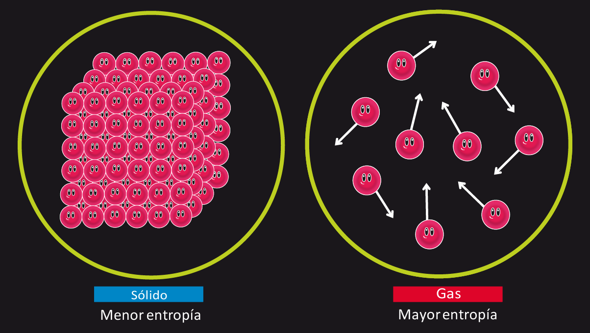
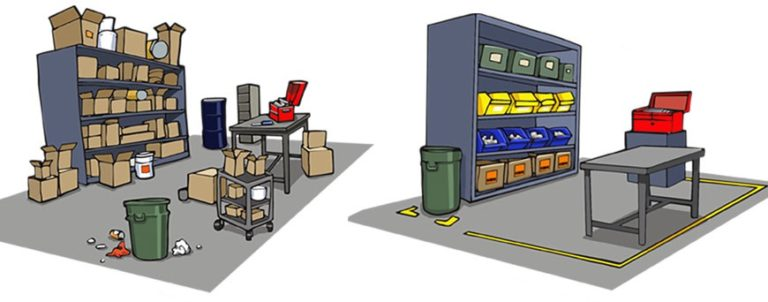
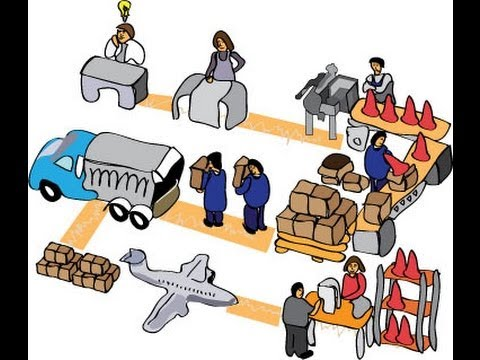

|
La Teoría General de Sistemas (TGS) no se limita a la tecnología o la programación, esta abarca diversos contextos como la sociedad, la política y/o etnias. Esta perspectiva científica se enfoca en las relaciones y conjuntos emergentes, siendo crucial en investigaciones y el desarrollo profesional. ---> Mas informacion del tema |
|---|
| Para referirse a los elementos de un sistema, teniendo claro los conceptos básicos, podemos tomar como analogía el cuerpo humano, este está compuesto de muchos órganos, huesos y demás componentes que están unidos el uno con el otro y trabajan constantemente como lo puede ser el SISTEMA nervioso, muscular y oseo. Todo esto para mantener vivo el cuerpo, cada elemento del sistema es de vital importancia para que el objetivo, meta o trabajo se cumpla o se logre. ---> Mas informacion del tema |

|
|---|
| Para tener más claro la entropía en el contexto de la TGS, se tiene de referencia un libro organizado con sus palabras y párrafos formando una narrativa coherente. Si las páginas del libro se mezclan al azar, es mucho más probable que se obtenga un conjunto de palabras sin sentido en lugar de una narrativa coherente. La entropía es aquellas situaciones donde los sistemas están desorganizados, en problemas o en decadencia. ---> Mas informacion del tema |  |
|---|
| Tomando en cuenta la analogía del libro explicada en la entropía, la neguentropia es básicamente lo opuesto a la entropía (Neg: negativo // entropía = Entropía negativa), no hay mucha ciencia en esto debido a que la neguentropia son aquellos sistemas que tienen más orden, esfuerzo, trabajo, compañerismo interno y un nivel de caos muy bajo. |  |
|---|
|
Hay que tener en cuenta que dentro de la TGS los componentes pueden ser físicos, conceptuales
o abstractos, su interacción y relación son fundamentales para el funcionamiento del sistema
en su conjunto. Los componentes pueden variar según el tipo de sistema que se esté analizando,
pero en general los principales son: * Partes o Elementos * Relaciones * Funciones * Objetivos * Entradas y salidas * Limites y entornos |

|
|---|
|
Son partes más pequeñas que forman parte de un sistema más grande y pueden ser considerados sistemas
por sí mismos, ya que tienen sus propios componentes, relaciones y funciones internas. La identificación
de subsistemas es importante para comprender la estructura y las interacciones dentro de un sistema complejo.
Se podría interpretar como un paso a paso: * Analisis del sistema * Division en partes * Division en subsistemas * Caracteristicas * Interconexiones y relaciones * Evaluacion del impacto |
 |
|---|
|
La perspectiva inicial de la palabra sistema cambia bastante a la actual no? hasta ahora se ha visto mucho mas a fondo de como funcionan los sitemas dentro de cualquier organizacion, grupo etc... Teniendo claro lo que se tiene, lo que se quiere lograr y el como se va a trabajar; Todo unido con el trabajo en equipo, el orden y la aclaracion de cada minimo detalle genera un nivel destacado de un sistema productivo y con poco nivel de entropia. |
No solo se tienen las bases de un buen sistema, sino como aplicarlas y sacarles el maximo provecho a estas mismas. Al tener claro hasta el mas minimo detalle dentro del sistema, se puede sacar un producto pulido hasta el mismo minimo detalle, asi como en caso de que falle se puede saber la raiz de ese problema. En conclusion podemos definir, trabajar y corregir detalles si estos estan ordenados y se estudian para poder operarlos. |
|---|
|
Las propiedades emergentes nacen de la relación con las partes del sistema, estas son características o
comportamientos que surgen en un sistema como resultado de las interacciones y relaciones entre sus partes
individuales. Estas propiedades no pueden explicarse únicamente examinando las partes por separado, sino que
emergen del conjunto y las conexiones entre ellas mismas. Un mejor detalle seria dividirlas en 2: * Analisis del sistema * Division en partes |

|
|---|
| Ambito ecologico | Ambito en la Ingenieria de "sistemas" | Ambito educativo |
Los ecosistemas se analizan como sistemas en los que los organismos interactúan con el entorno y entre sí. La TGS se utiliza para comprender cómo los cambios en una parte del ecosistema pueden tener efectos en cadena. |
En el diseño y análisis de sistemas complejos, la TGS ayuda a considerar las relaciones entre componentes, cómo se integran y cómo se comportan en conjunto físico o virtual para lograr un objetivo. |
La TGS se utiliza para analizar cómo los estudiantes, profesores, currículos y entornos educativos interactúan para lograr objetivos educativos analizando su trayectoria. |
|---|
| Redes sociales | Salud personal | Familia |
Las redes sociales son sistemas en línea donde los usuarios interactúan y comentan. La TGS se aplica para comprender cómo los comportamientos individuales contribuyen a la formación de comunidades en línea, tendencias virales y cambios en la dinámica de grupos. |
El cuerpo humano es un sistema complejo de órganos y sistemas interconectados. La TGS se aplica para entender cómo las decisiones de estilo de vida, la alimentación, el ejercicio y el descanso influyen en la salud general y el bienestar. |
Una familia es un sistema social donde los miembros interactúan, se comunican y toman decisiones conjuntas. La TGS se utiliza para entender cómo las dinámicas familiares influyen en las relaciones y la toma de decisiones en el hogar. |
|---|